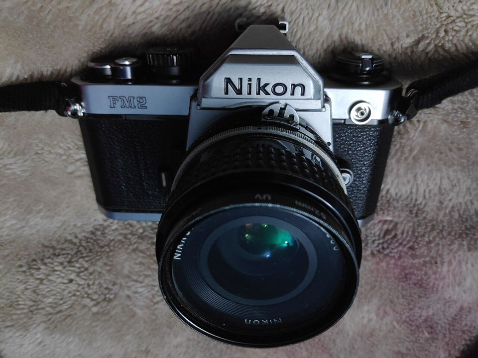

36 EXP. / 가이드 / 필름 카메라 처음 살 때 확인할 것
필름 카메라 처음 살 때 확인할 것
중고 카메라 10가지 점검 순서와 판매처 고르기

필름 카메라는 대부분 수십 년 된 중고입니다. 겉이 깨끗해도 셔터나 노출계가 약해져 있을 수 있습니다. 아래 순서대로 보면 고장 난 카메라로 첫 롤을 버리는 일을 크게 줄일 수 있습니다.
사기 전에 정할 것
- 어떤 종류로 할지: 찍는 재미가 먼저라면 자동 똑딱이, 노출을 배우고 싶다면 수동 SLR, 작고 조용한 카메라를 원하면 레인지파인더, 필름값을 아끼려면 하프프레임입니다. 고르기 어렵다면 필름 테스트부터 해 보세요.
- 배터리가 꼭 필요한지: 기계식 카메라는 배터리 없이도 셔터가 작동하고, 배터리는 노출계에만 씁니다(예: Nikon FM2). 전자식 자동 카메라는 배터리가 없으면 아무것도 작동하지 않습니다. 그 카메라가 쓰는 배터리를 지금도 살 수 있는지 먼저 찾아보세요.
- 예산: 인기 기종 페이지에 출처가 있는 해외 판매가를 정리했습니다. FM2 · K1000 · AE-1 · 뮤2 · T2. 국내 중고 시세는 출처를 확인한 자료가 없어 적지 않았습니다. 카메라 외에 필름과 현상비가 롤마다 들어가니 필름 사진 비용 계산도 함께 보세요.
직접 보고 확인할 10가지
판매자를 만나거나 매장에서 볼 때 확인합니다. 작은 손전등(휴대폰 불빛)과 노출계 앱을 준비하면 편합니다.
- 겉모습과 떨어뜨린 흔적. 모서리가 찌그러졌거나 렌즈 앞 테두리가 휘었다면 안쪽이 틀어졌을 수 있습니다. 긁힘 정도는 사진에 영향이 없습니다.
- 배터리 칸. 뚜껑을 열어 초록색·흰색 가루(부식)가 없는지 봅니다. 접점이 상하면 전원이 들어오지 않습니다.
- 셔터 속도별 소리. 뒷판을 열고 1초, 1/30초, 1/250초, 가장 빠른 속도 순서로 눌러 봅니다. 느린 속도는 길게, 빠른 속도는 짧게 열려야 합니다. 1초가 짧게 끊기거나 중간에 걸리면 정비가 필요한 상태입니다.
- 셔터막. 뒷판을 연 채로 셔터막에 구김이나 구멍이 없는지 봅니다. 손가락으로 만지지 않습니다.
- 렌즈 속. 렌즈 뒤에서 불빛을 비추고 앞에서 들여다봅니다. 실뿌리처럼 퍼진 무늬는 곰팡이, 전체가 뿌연 것은 흐림입니다. 작은 먼지는 사진에 거의 나오지 않습니다.
- 조리개. 조리개 링을 돌리며 날개가 고르게 움직이는지, 날개에 기름이 번져 있지 않은지 봅니다.
- 초점. 먼 곳에 초점을 맞춰 무한대(∞)에서 또렷한지 봅니다. 레인지파인더는 초점 창의 두 상이 위아래로 어긋나지 않는지 확인합니다.
- 노출계. 같은 장면을 휴대폰 노출계 앱과 비교합니다. 1스톱 안쪽이면 쓸 만합니다. 노출계가 죽어 있어도 써니 16으로 찍을 수는 있습니다.
- 차광재. 뒷판 홈과 경첩 쪽의 스펀지가 끈적이거나 부스러지면 빛이 샙니다. 교체는 가능하지만 정비 비용이 더해집니다.
- 감기와 되감기. 감기 레버가 부드럽게 돌아가는지, 필름 카운터가 한 칸씩 올라가는지, 되감기 크랭크가 걸리지 않는지 봅니다. 자동 똑딱이는 전원, 줌, 플래시 충전, 액정 표시까지 확인합니다.
어디서 살지
- 정비·보증이 있는 판매처: 값은 더 높지만 고장이 나도 수리나 반품을 받을 수 있습니다. 예를 들어 미국 Blue Moon Camera는 FM2n 바디를 6개월 보증과 함께 판매합니다(FM2 페이지에 출처).
- 개인 거래: 값은 낮지만 반품이 어렵습니다. 직접 만나 위 10가지를 확인하고, 판매자가 그 카메라로 찍은 사진이 있으면 보여 달라고 부탁해 보세요.
- "작동 확인"과 "정비 완료"는 다릅니다: 작동 확인은 셔터가 눌린다는 뜻입니다. 셔터 속도와 노출계가 정확한지는 따로 물어봐야 합니다.
받은 뒤 할 일
- 저렴한 필름으로 테스트 롤. Gold 200이나 UltraMax 400으로 밝은 곳, 그늘, 실내, 여러 셔터 속도를 섞어 찍습니다. 반품 기간이 있다면 받자마자 찍어 그 안에 현상까지 끝냅니다.
- 결과로 판단하기. 붉은 줄이나 번진 빛이 있으면 차광재, 한쪽만 어둡게 나오면 셔터막, 전체가 너무 어둡거나 밝으면 노출계나 셔터 속도를 의심합니다.
- 필름 넣는 법 익히기. 테스트 롤이 비어 있다면 필름이 감기지 않았을 수도 있습니다. 35mm 필름 넣는 법을 확인해 주세요.
다른 가이드
필름 카메라 첫 롤 완주 가이드필름 사진 비용 계산: 한 롤, 한 장에 얼마35mm 필름 넣는 법과 되감기써니 16 노출법: 노출계 없이 찍기집에서 흑백 필름 현상하기필름 스캔 방법 4가지 비교필름 보관법과 공항 엑스레이